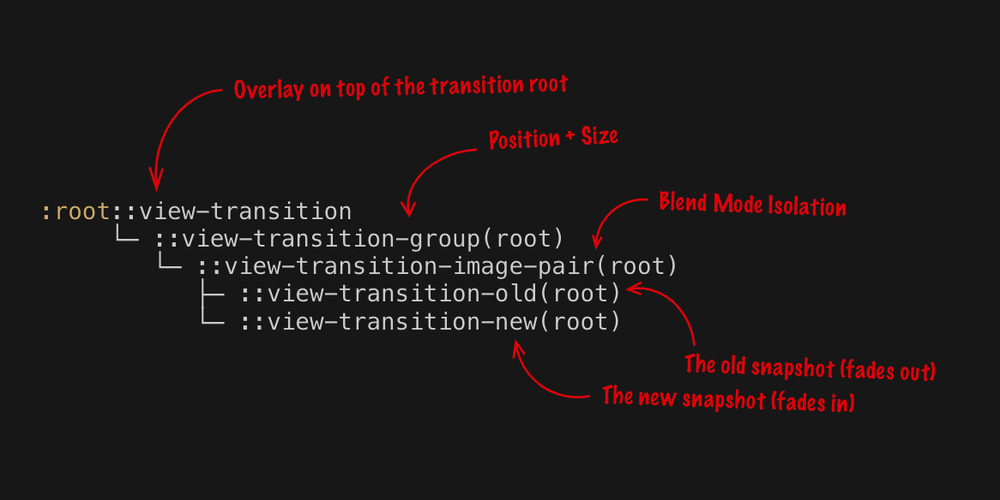

About
During this final Weekly Nerd session, Sanne 'T Hooft spoke to the attendees (including my fellow students) about the experience of the Minor Web and Development. He discussed the courses and guest lecturers we had throughout the program. Among other things, he showcased some work from CSS 2 the rescue by my fellow students. Following his introduction, several other speakers took the stage.
View Transitions
Bramus explained that view transitions are a popular design choice for reducing users' cognitive load. This helps them stay in context and perceive shorter perceived loading times when moving between different states or views of an application.
Historically, he elaborated, it has been challenging to implement view transitions on the web. For Single Page Applications (SPAs), a lot of CSS and JavaScript was required to load, position, and animate old and new content, manage user interactions, and remove old content after the transition. This could also cause accessibility issues such as loss of reading position and focus confusion.
Simplifying View Transitions with the API
Bramus pointed out that the View Transitions API offers a much easier way to manage the necessary DOM changes and transition animations. Although this API currently does not support cross-document view transitions, efforts are actively underway for future specifications.
He provided an example of how a basic view transition can be implemented in an SPA using an updateView() function that displays new content and utilizes the API if supported by the browser. This enables a smooth cross-fade animation between the old and new images and captions.
Finally, Bramus discussed how the View Transitions API includes various promises, allowing developers to respond to different stages of the transition process. This enables creating custom animations and modifying the default animation using regular CSS or JavaScript.
💡 Reflection
I am aware that Miriam also held her talk, but it wasn't necessarily interesting to me even though I'm certain that the info she shared was definitely of great value. I really favored Bramus' talk more since I adore view transitions, making the web seem so fluid and unique. Once View transitions are available for cross-browser use, I will definitely use it in my own websites.